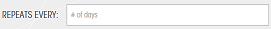

How To Create Meeting
Note: Meeting start date and time must be later than current date and time!
- Click on the "Create Event" button on the left side menu bar.
- Fill in valid meeting title, description in the form.
- Select meeting start date on calendar by click on icon , or select year, month and day from drop down list
- Click on the "Start Time" box and select start time from drop down list.
- Fill in reasonable minutes of meeting duration.
- Choose meeting recurrence from "Only once","Daily","Weekly",and "Monthly"
- Recurrence "Only Once": Single Meeting without repeating.
- If you choose recurrence by "Daily",please specify number of DAYS you want to repeat the meeting in the "Repeat Every" box 
, specify number of MEETINGS if you choose ends on "After # of occurrences"
 ,
or specify end date if you choose ends on specified date
,
or specify end date if you choose ends on specified date 
- If you choose recurrence by "Weekly",please specify number of WEEKS you want to repeat the meeting in the "Repeat Every" box
 ,
specify days of the week for your meeting.
specify number of occurrences if you choose ends on "After # of occurrences",
specify end date if you choose ends on specified date
or specify number of occurrences if you choose ends on "After # of Weeks"
,
specify days of the week for your meeting.
specify number of occurrences if you choose ends on "After # of occurrences",
specify end date if you choose ends on specified date
or specify number of occurrences if you choose ends on "After # of Weeks"
- If you choose recurrence by "Monthly",please specify number of MONTHS you want to repeat the meeting in the "Repeat Every" box, choose from Occurs by "Day of the month" or "First occurrence of the day of the week" specify "Day of the month" from drop down list and input number of occurrences for your meeting if you choose Occur by "day of the month" or choose the day of week and input number of occurrences for your meeting if you choose occur by "First occurrence of the day of the week"
- Click on the "Save" button to create meeting, your should be able to find your new meeting(s) on the calendar!